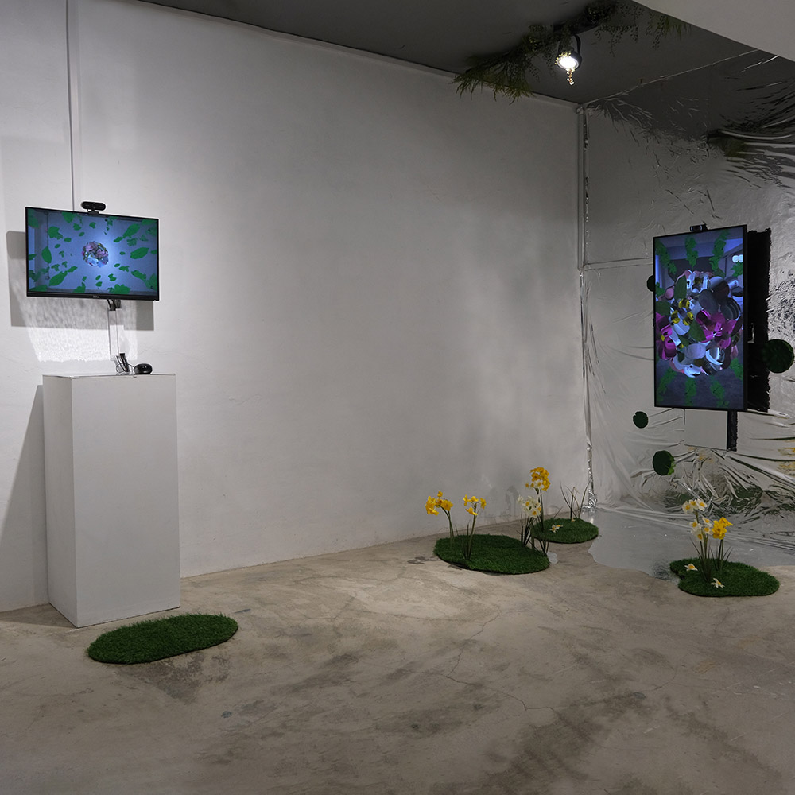
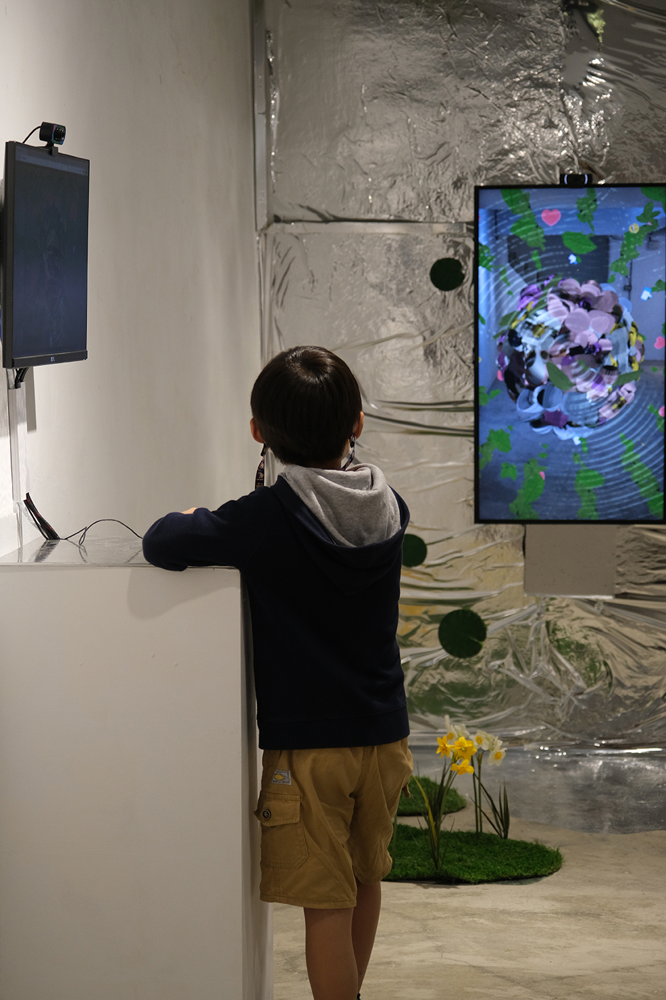
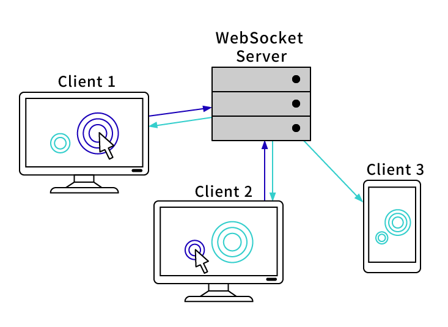
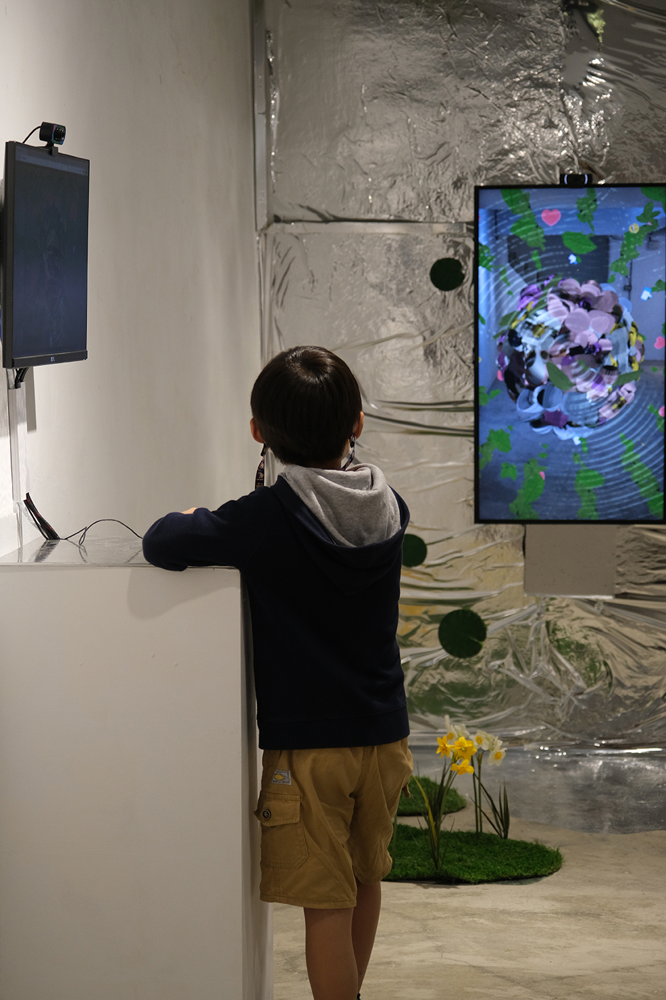
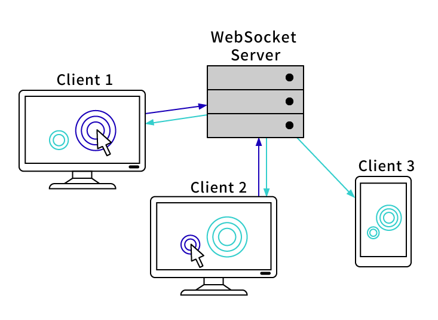

《數位鏡 · 花園 Digital Mirror Garden》
2022
webCam，網路，數位影像
利用 3D 模型貼圖的概念讓視訊影像即時轉換成虛擬模型的貼皮，觀眾透過觀看自己的影像進入到作者所創造的「數位花園」，並且透過同步的互動網頁技術，試圖讓不在現場的觀眾也能透過網路同時進入到這座「數位花園」，雖然觀眾之間看不到彼此的影像，但是當其中一位觀眾點集畫面時，同時在這座虛擬花園空間的其他觀眾也能察覺到他者的存在，是一座具有隱私性的公共花園。
《數位鏡·花園》是我想像的一處數位風景，呈現我們使用自媒體的過程，除了單向的在照一面鏡子之外，人們始終還是透過網路保持連結， 借由營造ㄧ個數位空間中的花園，打造一個個人獨處與群體社交都適用的媒體介面。
特別感謝
技術指導｜TECHNICAL : 張靜馨




